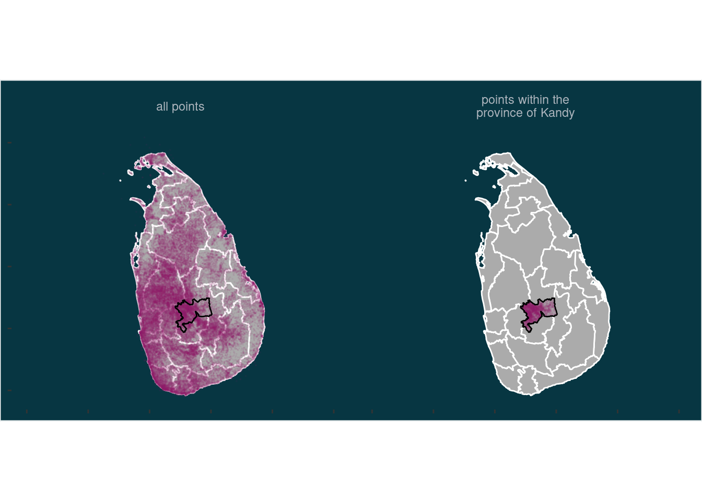
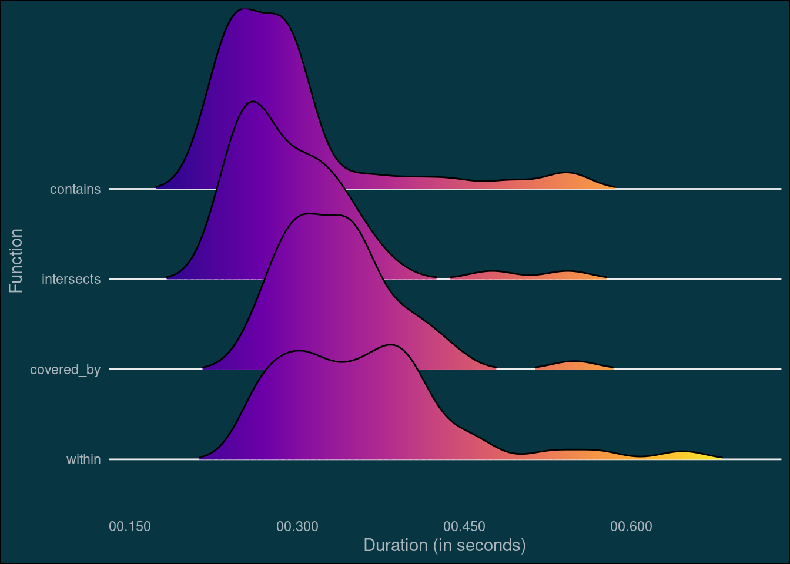
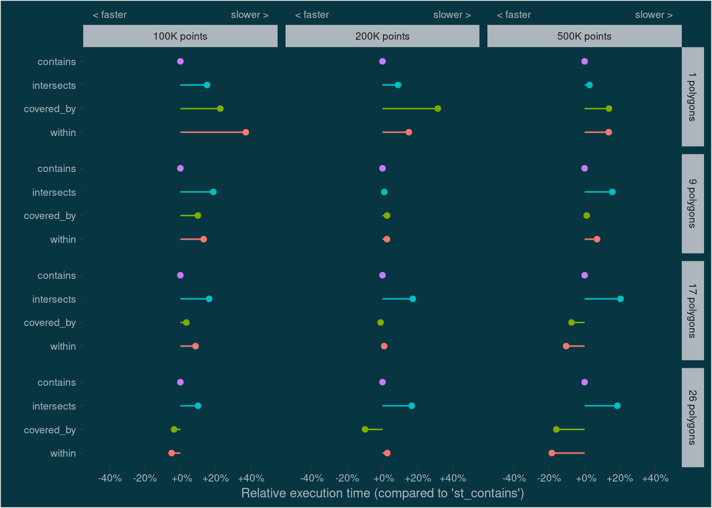
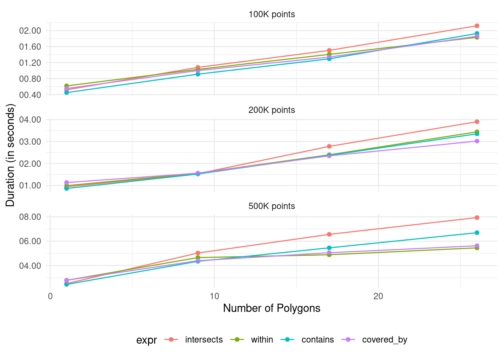
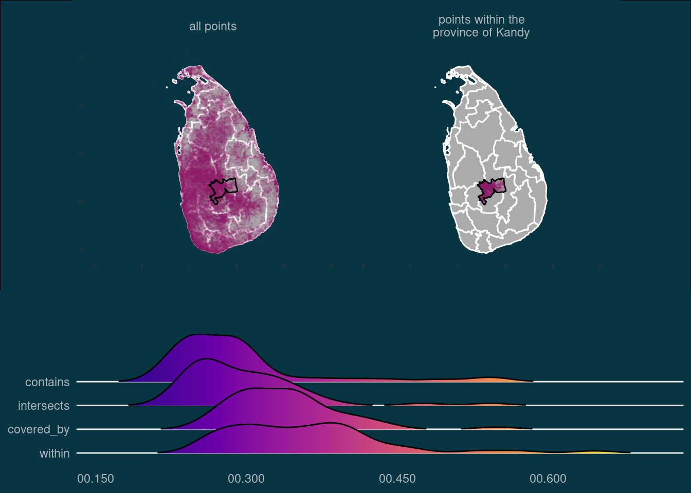

loading libraries
library(dplyr)
library(purrr)
library(sf)
library(readr)
library(ggplot2)
library(lubridate)
library(microbenchmark)
library(ggridges)
library(forcats)Comparing the performance of different methods to do a “point in polygon operation” with sf.
Nils Ratnaweera
October 22, 2021
I often work with geodata in R and come across situations where I need to subset points based on whether they lie within a polygon or not. There are several functions to solve this problem1. From the package sf, the functions st_within, st_contains, st_intersects and st_covered_by can all answer this question2. I noticed that with big datasets, some of these functions are unbearably slow. To find out which one is faster in which scenario, I decided to benchmark these four functions.
To make things more interesting, I won’t use my usual Swiss data for this test, but data from my second home, Sri Lanka. More specifically: I will use the Geonames data (> 50k points) and the administrative boundaries of Sri Lanka (26 polygons).
# Downloaded from: https://data.humdata.org/dataset/sri-lanka-administrative-levels-0-4-boundaries
# Administrative Level 0: country (1 features)
# Administrative Level 1: province (9 features)
# Administrative Level 2: district (26 features)
# Administrative Level 3: divisional secretatiat (333 features)
# Administrative Level 4: grama niladhari (14'044 features)
tmp <- tempdir()
boundary_dir <- file.path(tmp, "boundary")
unzip("data-git-lfs/lka_adm_slsd_20200305_shp.zip", exdir = boundary_dir)
sl_boundary_l2 <- read_sf(
file.path(boundary_dir, "lka_admbnda_adm2_slsd_20200305.shp")
)
# https://epsg.io/5234
# https://epsg.io/5235# geonameid : integer id of record in geonames database
# name : name of geographical point (utf8) varchar(200)
# asciiname : name of geographical point in plain ascii characters, varchar(200)
# alternatenames : alternatenames, comma separated, ascii names automatically transliterated, convenience attribute from alternatename table, varchar(10000)
# latitude : latitude in decimal degrees (wgs84)
# longitude : longitude in decimal degrees (wgs84)
# feature class : see http://www.geonames.org/export/codes.html, char(1)
# feature code : see http://www.geonames.org/export/codes.html, varchar(10)
# country code : ISO-3166 2-letter country code, 2 characters
# cc2 : alternate country codes, comma separated, ISO-3166 2-letter country code, 200 characters
# admin1 code : fipscode (subject to change to iso code), see exceptions below, see file admin1Codes.txt for display names of this code; varchar(20)
# admin2 code : code for the second administrative division, a county in the US, see file admin2Codes.txt; varchar(80)
# admin3 code : code for third level administrative division, varchar(20)
# admin4 code : code for fourth level administrative division, varchar(20)
# population : bigint (8 byte int)
# elevation : in meters, integer
# dem : digital elevation model, srtm3 or gtopo30, average elevation of 3''x3'' (ca 90mx90m) or 30''x30'' (ca 900mx900m) area in meters, integer. srtm processed by cgiar/ciat.
# timezone : the iana timezone id (see file timeZone.txt) varchar(40)
# modification date : date of last modification in yyyy-MM-dd format
colnames <- c("geonameid", "name", "asciiname", "alternatenames", "latitude",
"longitude", "feature_class", "feature_code", "country_code",
"cc2", "admin1_code", "admin2_code", "admin3_code",
"admin4_code", "population", "elevation", "dem", "timezone",
"modification_date")
geonames_dir <- file.path(tmp, "geonames")
unzip("data-git-lfs/LK.zip", exdir = geonames_dir)
geonames <- read_tsv(file.path(geonames_dir, "LK.txt"),col_names = colnames) %>%
st_as_sf(coords = c("longitude", "latitude"), crs = 4326)Rows: 56748 Columns: 19
── Column specification ────────────────────────────────────────────────────────
Delimiter: "\t"
chr (8): name, asciiname, alternatenames, feature_class, feature_code, cou...
dbl (10): geonameid, latitude, longitude, admin1_code, admin2_code, admin3_...
date (1): modification_date
ℹ Use `spec()` to retrieve the full column specification for this data.
ℹ Specify the column types or set `show_col_types = FALSE` to quiet this message.Once all the data is imported, I can demonstrate visually the task. I want to subset all points within the province of Kandy (incidentally where I spent 5 superb years of my childhood). Using st_within() for this operation, the output looks like this:
kandy <- filter(sl_boundary_l2, ADM2_EN == "Kandy")
points_filter <- list(
within = geonames[st_within(geonames,kandy,sparse = FALSE)[,1],]
)
plot_bg_col <- Sys.getenv("plot_bg_col")
text_col <- Sys.getenv("text_col")
p1 <- ggplot(sl_boundary_l2) +
geom_sf(color = "#ffffff", fill = "#ababab") +
geom_sf(data = rbind(transmute(geonames, val = "all points"),
transmute(points_filter[["within"]],
val = "points within the\nprovince of Kandy")),
alpha = 0.05, size = 0.05, color = "#8d2663") +
geom_sf(data = ~filter(., ADM2_EN == "Kandy"), fill = NA, color = "#000000") +
facet_wrap(~val) +
coord_sf(xlim = c(78, 83)) +
theme(strip.background = element_blank(),
strip.text = element_text(color = text_col),
panel.background = element_blank(),
plot.background = element_rect(fill = plot_bg_col),
panel.grid = element_blank(),
axis.text = element_blank(),
)
p1
Next, I will do the same operation with the other functions and also check the output number of rows to see if they are similar (they might be slightly off if we have points exactly on the polygon boundary) or even identical.
points_filter[["contains"]] <- geonames[st_contains(kandy,
geonames,
sparse = FALSE)[1,],]
points_filter[["intersects"]] <- geonames[st_intersects(geonames,
kandy,
sparse = FALSE)[,1],]
points_filter[["covered_by"]] <- geonames[st_covered_by(geonames,
kandy,
sparse = FALSE)[,1],]
tibble(
function_name = names(points_filter),
nrow = sapply(points_filter, nrow),
identical_to_st_within = sapply(points_filter, function(x){
identical(points_filter[["within"]], x)
})
) %>%
knitr::kable(col.names = stringr::str_replace_all(colnames(.),"_", " "))| function name | nrow | identical to st within |
|---|---|---|
| within | 3251 | TRUE |
| contains | 3251 | TRUE |
| intersects | 3251 | TRUE |
| covered_by | 3251 | TRUE |
To find out which function is the fastest, I use the package microbenchmark. Since it doesn’t always take the same amount of time to process the same function, each function is executed multiple times (times = 50) and we will look at the distribution of the execution times.
mbm2df <- function(mbm_obj){
df <- as.data.frame(mbm_obj)
df$time <- dnanoseconds(df$time)
df
}
mbm_df <- mbm2df(mbm)
p2 <- mbm_df %>%
mutate(
expr = fct_reorder(expr,time,median,.desc = TRUE)
) %>%
ggplot(aes(time,expr,fill = ..x..)) +
geom_density_ridges_gradient(scale = 2, rel_min_height = 0.01) +
scale_fill_viridis_c(option = "C") +
scale_x_time(name = "Duration (in seconds)",
labels = scales::time_format(format = "%OS3")) +
labs(y = "Function") +
theme_minimal() +
theme(legend.position="none",
plot.background = element_rect(fill = plot_bg_col), panel.grid.minor.x = element_blank(),panel.grid.major.x = element_blank(), axis.text = element_text(colour = text_col), text = element_text(colour = text_col))
p2Picking joint bandwidth of 0.0204
This benchmark shows that st_contains and st_intersects executes faster than st_covered_by and st_within. The next question is: How do the functions scale and perform under different scenarios? I’ll test this by generating additional points to subset, and also by using more provinces than just Kandy. And since I’m more interested in relative rather than absolute execution times, I will calculate the median duration per function and scenario and rescale the values by deviding them with the duration of st_intersects.
n_points_vec <- c(100e3,200e3,500e3)
n_poly_vec <- c(1,9,17,26)
mbm2 <- map_dfr(n_points_vec,function(n_points){
points <- st_sample(sl_boundary_l2,n_points,what = "centers")
mbm_points <- map_dfr(n_poly_vec, function(n_poly){
polygons <- sample_n(sl_boundary_l2, n_poly)
mbm_poly <- microbenchmark(
intersects = st_intersects(polygons,points),
within = st_within(points,polygons),
contains = st_contains(polygons,points),
covered_by = st_covered_by(points,polygons),
times = 10
)
as_tibble(mbm_poly) %>%
mutate(n_poly = n_poly)
}) %>%
mutate(n_points = n_points)
})mbm2_df <- mbm2df(mbm2)
mylabels <- function(x){sprintf("%+3.f%%", x*100)}
mbm2_df %>%
group_by(expr, n_poly, n_points) %>%
summarise(median = median(time)) %>%
ungroup() %>%
group_by(n_poly,n_points) %>%
mutate(
perc = median/median[expr == "contains"]-1,
expr = fct_relevel(expr, "within", "covered_by","intersects", "contains")
) %>%
ggplot(aes(perc,as.factor(expr), color = expr, fill = expr)) +
geom_point() +
geom_linerange(aes(xmin = 0, xmax = perc)) +
# expand_limits(x = 0) +
scale_x_continuous("Relative execution time (compared to 'st_contains')",
breaks = seq(-.4,.4,.2), labels = mylabels,
limits = c(-.5,.5),
sec.axis = sec_axis(~.x,
breaks = c(-.4,.4),
labels = c("< faster","slower > "))) +
labs(y = "") +
facet_grid(n_poly~n_points,
labeller = labeller(n_points = ~paste0(as.integer(.x)/1e3, "K points"),
n_poly = ~paste0(.x, " polygons")))+
# theme_light() +
theme(legend.position = "none",
axis.ticks.x.top = element_blank(),
text = element_text(size = 9),
plot.background = element_rect(fill = plot_bg_col),
panel.background = element_rect(fill = plot_bg_col),
panel.grid = element_blank(),axis.text = element_text(colour = text_col),axis.title = element_text(colour = text_col),strip.background = element_rect(fill = text_col)
)
mbm2_df %>%
group_by(expr, n_poly, n_points) %>%
summarise(median = median(time)) %>%
ungroup() %>%
ggplot(aes(n_poly,median, color = expr, fill = expr)) +
geom_point() +
geom_line() +
scale_y_time(name = "Duration (in seconds)",
labels = scales::time_format(format = "%OS2")) +
scale_x_continuous(name = "Number of Polygons") +
facet_wrap(~n_points,
labeller = labeller(n_points = ~paste0(as.integer(.x)/1e3, "K points")),
scales = "free_y", ncol = 1) +
theme_minimal() +
theme(legend.position = "bottom")
This test shows something interesting: While st_contains and st_intersects are fast with a single polygon, they don’t scale well with lager number of polygons. This effect is especially prominent when the number of points is large (~500K).
My take home message from this whole exercise: If you want to subset points based on whether they lie in specific polygons or not, use st_intersects or st_contains when the number of polygons is small. Use st_covered_by or st_within when the number of polygons is large. If it’s important what happens to points lying on the edge, remember that only st_intersects and st_covered_by will include them.
